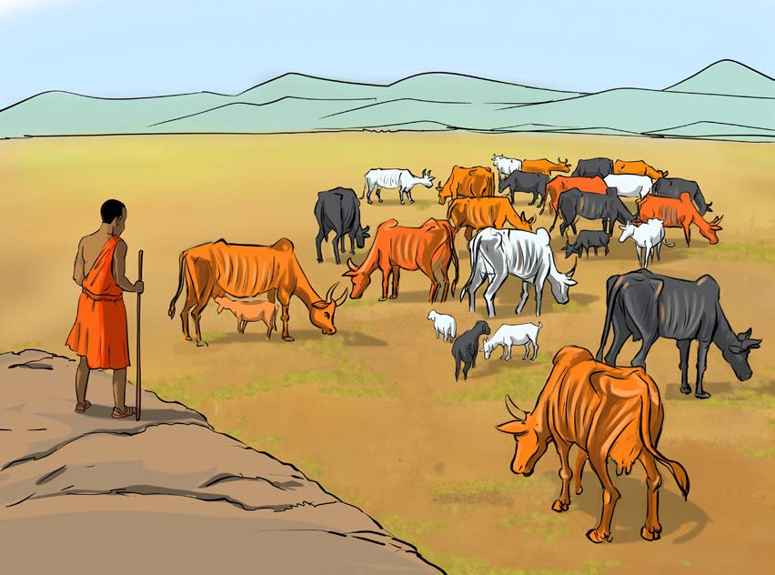

Athari zitokanazo na ufugaji usiofaa
Wanyama wengi wanapofugwa au kuchungwa eneo moja au dogo kwa muda mrefu, huweza kumaliza nyasi zote na uoto mwingine na kuacha ardhi wazi. Vilevile, makundi makubwa ya mifugo yanapopita katika eneo moja kwa muda mrefu huondoa uoto katika ardhi na kutifua udongo hali ambayo husababisha maji au upepo kumomonyoa udongo kwa urahisi. Aidha, ufugaji wa kuhamahama husababisha ukataji miti ovyo pale ambapo wafugaji hutengeneza mazizi ya kuhifadhi mifugo, makazi, na kupata kuni za kupikia. Kielelezo namba 8 kinaonesha eneo la ardhi lililoharibiwa kwa sababu ya shughuli za ufugaji holela.
